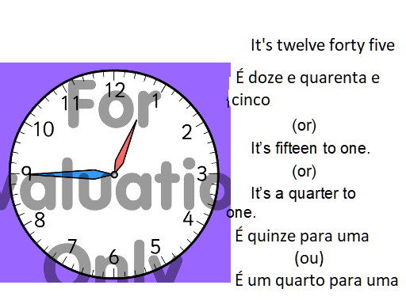

Nós, usamos 12 horas em todos os nossos exemplos, apartir daqui.
A tradução do inglês:
12:45 p.m.
"It's twelve forty-five" = "São doze e quarenta e cinco"
"são quarenta e cinco passados das doze"(só em português)
De acordo com o que vimos na lição 2, as regras para usar "to" e "Quarter",
(para) (um quarto), são exemplos abaixo:
It´s fifteen to one - "são quinze para uma"(da tarde).
It´s a quarter to one - "É um quarto para uma"(da tarde)
2:45 p.m.
"It´s two forty-five" = "são duas e quarenta e cinco" (da tarde).
"são quatorze e quarenta e cinco(só em português)"
Uso de "to e "quarter":
"It´s a quarter to three" = "são um quarto para as tres"
"It´s fifteen to three" = "são quinze para as tres"

Aqui, vamos relembrar a primeira lição, nos dividimos o relogio ao meio na vertical, e os numeros a direita são chamados numeros (minutos) passados da hora(past),e os da esquerda são chamados numeros(minutos) que faltam para chegar a hora. (to).

E na segunda lição , dividimos o relogiode novo ao meio na horizontal,o relogio ficou dividido em
quatro extemidades:
a direita, um quarto depois da hora
(quarter past)
a esquerda, um quarto antes da hora (para hora) (quarter to)
acima, A hora inteira completa(o´clock)
abaixo metade da hora (half).

 Continuar
Continuar